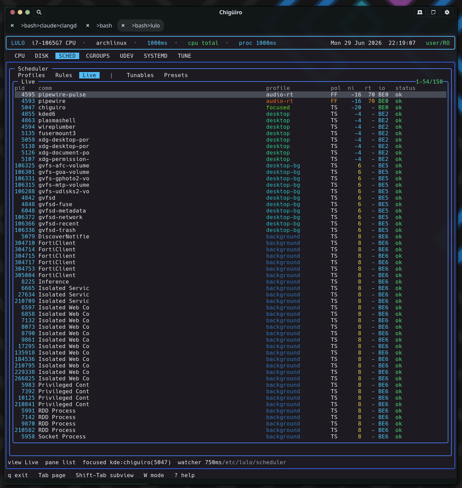

Focus detection is how the scheduler learns which window is active so it can boost that app. Lulo treats it as an external helper subprocess speaking a one-PID-per-line protocol – a deliberately desktop-agnostic design that supports KDE and GNOME today through the same session-bus contract, with the data flowing in opposite directions on each.
The core never links a compositor SDK. lulod runs a focus monitor that forks a provider helper binary and reads its stdout; the entire contract is: the helper prints one decimal PID per line, where each line is the PID that currently owns window focus (and 0 means “nothing focused”). The monitor holds the helper’s read fd, child PID, a restart timer, a line-assembly buffer, and the last reported (pid, start_time) for de-duplication.
That single design decision – a process boundary plus a line protocol instead of a C interface – is what keeps the scheduler core desktop-agnostic. The KDE and GNOME specifics live entirely in separate helper binaries (and a KWin script / Shell extension); lulod just reads integers.
The provider is chosen by focus_provider_from_env, which first honors the LULOD_FOCUS_PROVIDER override and otherwise auto-detects from the session.
LULOD_FOCUS_PROVIDER |
Result |
|---|---|
none |
Focus tracking disabled |
kde |
Force the KDE provider |
gnome |
Force the GNOME provider |
auto (or unset) |
Auto-detect |
| anything else | Disabled (an unrecognized value turns focus off) |
Once past the override, detection runs in a deliberate order so it keys off what is actually running rather than a cached label:
XDG_SESSION_TYPE != "wayland" and no WAYLAND_DISPLAY), detection returns no provider – on a pure X11 session focus tracking is off by default, because no X11 helper is implemented.lulod asks the session bus which compositor owns its well-known name (NameHasOwner on org.kde.KWin selects KDE, org.gnome.Shell selects GNOME). This is authoritative about the compositor that is up right now.XDG_CURRENT_DESKTOP, XDG_SESSION_DESKTOP, DESKTOP_SESSION, KDE_FULL_SESSION, and KDE_SESSION_VERSION case-insensitively: a kde/plasma hit selects KDE, a gnome hit selects GNOME.Why probe the bus? The environment
lulodsees is a snapshot: the user-service installer freezes session variables into a systemd drop-in at install time. After a GNOME↔KDE reboot that snapshot is stale, and an env-only detector would launch the wrong helper – e.g. the GNOME helper on a Plasma session, which finds noorg.ninez.LulodFocusowner and reports no focus. Probing the live bus self-corrects across desktop switches. For the probe to take effect the installer bakesLULOD_FOCUS_PROVIDER=auto, deferring the choice to runtime; an explicitkde/gnome/nonestill wins.
The helper binary is resolved across several install layouts in order – next to the running lulod (dev checkout), <prefix>/libexec/lulo/, the compile-time LULO_HELPERDIR, then /usr/libexec/lulo/ – so the same daemon works in-tree or installed. If the binary cannot be found the monitor disables itself permanently; if a spawn fails it retries after 5 seconds.
The KDE helper lulod-focus-kde is a Qt program that bridges KWin’s scripting engine to the line protocol. On startup it:
org.ninez.LulodFocus at object path /LulodFocus, exporting a single method UpdateFocusedPid(int).org.kde.KWin / /Scripting / loadScript + start) to load lulod_focus_kde.js.The injected script runs inside KWin’s JS engine. It connects to workspace.windowActivated and workspace.windowAdded, and on each event calls back over D-Bus to the helper’s UpdateFocusedPid with the focused window’s PID – returning 0 for chrome and non-app surfaces (the desktop, docks, popups, input methods, and so on). The helper’s UpdateFocusedPid slot clamps negatives to 0, de-dupes, and writes pid\n to stdout, which is exactly what lulod reads.
So the KDE path is: KWin event → KWin JS script → D-Bus push to the helper → helper stdout → lulod pipe.
The GNOME provider (added in commit 54f91ef) mirrors the same bus contract from the other side. A GNOME Shell extension publishes the service, and the helper subscribes to it.
The Shell extension (lulod-focus@ninez.org) owns the bus name org.ninez.LulodFocus at /LulodFocus, exporting a method GetFocusedPid() -> i and a signal FocusedPidChanged(i). On enable it connects to global.display’s notify::focus-window; _focusedPid() reads global.display.focus_window.get_pid() (returning 0 when nothing reportable owns focus) and emits FocusedPidChanged on change.
The helper lulod-focus-gnome is a GIO program that connects to the session bus, subscribes to the FocusedPidChanged signal, and – crucially – watches the bus name. When the name appears it calls GetFocusedPid synchronously to learn the current focus immediately; when the name vanishes it reports 0. This “watch, don’t require” design means the helper works whether the extension loads before or after it, and withdraws focus if the extension goes away. Each reported PID is written as pid\n – the identical line contract as KDE, so lulod consumes both with the same parser.
The inversion is not arbitrary – it follows each compositor’s extension model. KWin exposes a runtime scripting D-Bus API, so any session process (the helper) can inject JS on the fly; no pre-installation is needed, and the script pushes PIDs to the helper. GNOME/Mutter deliberately hides window PIDs from external processes – its Introspect.GetWindows API is whitelist-gated and Shell.Eval is disabled in production – and it only loads JS from its own extension directories. The focused PID can therefore only be obtained by code running inside gnome-shell, which must be installed and enabled once as a Shell extension. That extension then exports the service, and the helper subscribes. Same bus name org.ninez.LulodFocus, opposite roles.
This is why GNOME needs the one-time install-lulo-gnome-extension.sh step (and a logout/login on Wayland so the Shell loads it), while KDE works with just its script shipped under share/lulo/kwin.
Putting it together, a focus change travels from the compositor to an applied scheduling policy:
pid\n; lulod’s main loop polls the helper fd and parses the line.lulod forwards the (pid, start_time, provider) to lulod-system as a SCHED_FOCUS_UPDATE request. This is the point where the PID crosses the privilege boundary – from the unprivileged user daemon to the root system daemon.lulod-system re-collects metadata for the PID, verifies the start-time matches (a PID-reuse guard), records the focus target (PID, comm, exe, unit, slice, cgroup), and runs an immediate rescan.focus_profile – so the entire focused app’s cgroup is boosted, not just the one window-owning thread. See Scheduler for the resolution detail.focused profile, and the status bar reads focused kde:chiguiro(5047).
The monitor is built to fail safe. When a helper dies, EOFs, or errors, it closes the fd, reaps the child, schedules a restart (2-second backoff), and commits PID 0 – so a focused profile is withdrawn rather than left applied to a stale window. The same zero-on-vanish behavior happens when the GNOME bus name disappears. Reported PIDs are de-duplicated by (pid, start_time) and verified to still exist before a change is reported, guarding against PID reuse at the monitor level as well.
Enabling focus tracking is an opt-in trust decision, most visibly on GNOME. The Shell extension deliberately routes around Mutter’s hardening (which withholds window PIDs from external processes) by re-publishing the focused PID on the session bus to any peer that owns or queries org.ninez.LulodFocus. So installing the extension widens session-local visibility: any process on your session bus can observe the focused-window PID stream. That is why it requires an explicit install + enable rather than shipping on by default.
On the privilege axis, the unprivileged lulod forwards a PID to root lulod-system, which then re-validates the PID’s start-time before acting, and applies scheduling policy as root. The relevant threat is a forged or raced PID, mitigated by the start-time check at both the monitor and the system daemon, and by the PID-existence verification in the monitor.
Because the contract is just “a process that prints PIDs,” supporting a new compositor means writing one helper that emits the focused PID per line – no change to lulod’s monitor or to the scheduler. The current support matrix:
| Provider | Status |
|---|---|
KDE / Plasma (lulod-focus-kde) |
Implemented |
GNOME (lulod-focus-gnome + Shell extension) |
Implemented |
| sway / wlroots, Hyprland, X11 | Not implemented (the architecture is built for it) |
SCHED_FOCUS_UPDATE boundary crossing